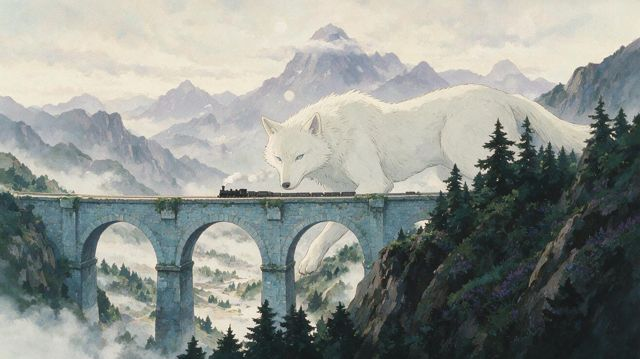
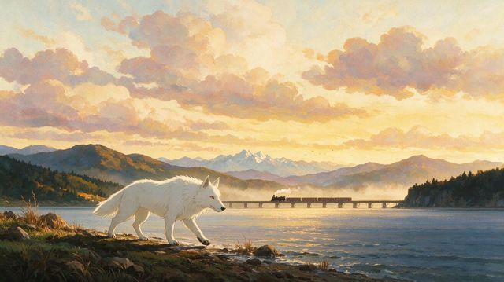
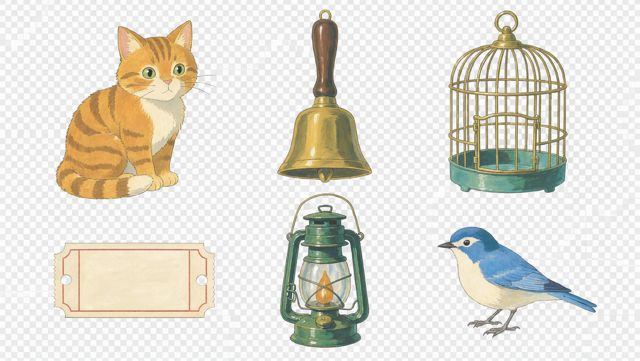
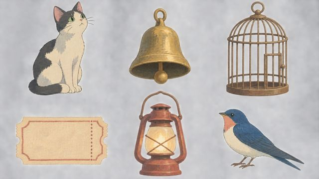
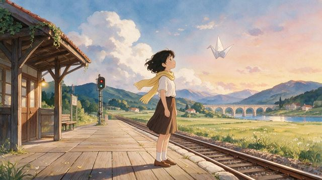
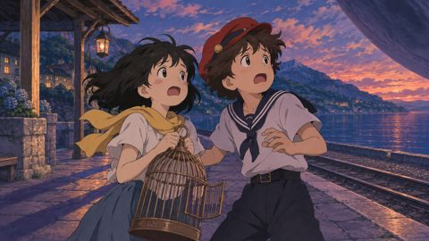

Benchmark · · 6 min read
Image model bench: what 25 models cost and where they fail
We needed art for a short film: frightened faces, wide plates and prop sheets with a real transparent background. We ran three passes over image models on one gateway, APIMart, and kept the cost, the time and our verdict for each use.
Verdict
Use gpt-image-2.6-flare at $0.026 an image for faces, plates and cut-out props. Use gpt-image-2 at $0.0085 when cost matters. Only 3 of 13 scored models sit on the cost-quality frontier; the other 10 cost more or score lower.
- Faces and feargpt-image-2.6-flareScore 5 in both runs
- Wolf and platesgpt-image-2.6-flareflux-3-image is the painterly second, $0.038
- Cut-out propsgpt-image-2.6-flareReal alpha in both runs
- Cheap bulkgpt-image-2$0.0085; dropped alpha in 1 of 2 prop runs
- Same character from a referenceseedream-5-0-pro or 2.6-flareScore 4 of 5
Method
- PromptSix prompts: fear, wolf, props, valley, cine, pair.
- Generate25 models, 1K, 16:9, one image per call. Cost and time come from the task result.
- Score0 to 5 by eye. Alpha is measured in code: clear above 0.4, half below 0.03.
- RepeatThe top 5 ran again, to see run-to-run drift.
- Pass 1: 15 models, 3 prompts. 38 of 45 images came back, $0.93.
- Pass 2: 14 models, 4 prompts, scored on style, emotion and faces, text-free output and edge quality. $2.38 with the reference test.
- Pass 3: 6 models, 6 images each, $0.94. A repeat of the 4 pass 2 prompts, plus a wide wolf plate and a character pair.
Frontier
3 of 13 scored models are on the frontier (gpt-image-2, and the tied pair 2.6-flare and 2.6-sunburst): nothing is cheaper and scores higher. gpt-image-2 is the cheap end at $0.0085. gpt-image-2.6-sunburst and gpt-image-2.6-flare tie at the top, $0.026 for a 5.0. flux-2-max and flux-2-flex cost $0.08, three times more, and score 3.25 and 3.5.
Data behind the chart
| Model | $ per image | Score | Status |
|---|---|---|---|
| gpt-image-2 | $0.0085 | 4.50 | on the frontier |
| hy-image-v3.5-preview | $0.0192 | 3.25 | beaten |
| gpt-image-2.6-sunburst | $0.0261 | 5.00 | on the frontier |
| gpt-image-2.5-flare | $0.0261 | 4.50 | beaten |
| gpt-image-2.6-flare | $0.0261 | 5.00 | on the frontier |
| qwen-image-3.0-pro | $0.0286 | 3.25 | beaten |
| seedream-5-0-pro | $0.0360 | 3.50 | beaten |
| flux-3-image | $0.0384 | 3.50 | beaten |
| wan2.7-image-pro | $0.0544 | 3.75 | beaten |
| kling-v4-image | $0.0571 | 2.50 | beaten |
| flux-kontext-max | $0.0640 | 2.50 | beaten |
| flux-2-max | $0.0800 | 3.25 | beaten |
| flux-2-flex | $0.0800 | 3.50 | beaten |
Winners by use
Faces and fear
gpt-image-2.6-flare gave true fear: wide eyes, huddled kids, $0.026. 2.6-sunburst is equal but slower (29 s against 12 s). flux-2-flex and flux-3-image draw calmer faces; flux-2-max is speckled and flux-kontext-max shows tiny distant kids. In pass 1, flux-2-pro, gemini-3-pro-image-preview and minimax-h3-image-highspeed drew calm or stiff faces.

Wolf and plates
flare and sunburst were richest. flux-3-image has the best Ghibli background feel at $0.038, but its wolf is smaller. seedream-5-0-pro and qwen-image-3.0-pro are clean. In pass 1 every model made a good plate. The new wide wolf plate (cine) scored 5 for flare and sunburst, 4 for gpt-image-2, seedream and gemini, 3 for flux-3-image.






Cut-out props
Only gpt-image-2, 2.5 and 2.6 (flare, sunburst) and wan2.7-image-pro give real alpha. Use gpt-image-2.6-flare: the cleanest, with hard edges, and real alpha in 2 of 2 runs. Flux and Seedream draw a fake checkerboard or a white backdrop. Shown on a dark ground.



Cost-efficient
gpt-image-2 at $0.0085 is the pick for bulk. Use gpt-image-2.6-flare at $0.026 when quality matters.
Repeat runs
We ran the top 5 again on the same 4 prompts. 4 of 20 scores changed, and 2 moved by 2 points or more. Both 2.6 models held all 8. The risk sits in the cheaper models.
| Model | Fear | Wolf | Valley | Props |
|---|---|---|---|---|
| gpt-image-2.6-flare | 5 → 5 | 5 → 5 | 5 → 5 | 5 → 5 |
| gpt-image-2.6-sunburst | 5 → 5 | 5 → 5 | 5 → 5 | 5 → 5 |
| gpt-image-2 | 4 → 4 | 4 → 4 | 4 → 4 | 5 → 2 |
| flux-3-image | 3 → 3 | 3 → 3 | 4 → 3 | 2 → 2 |
| seedream-5-0-pro | 3 → 4 | 4 → 2 | 4 → 4 | 2 → 2 |



Reference image
All six models in the first test accept image_urls, a list of URLs or base64 data URIs, in the same request. All kept the style and layout; the Gemini and gpt outputs reproduced the reference composition most closely, while seedream and flux-3 restyled the bridge more freely. Cost: $0.200 for the six.
Pass 3 asked for the same girl in a new pose. 2 of 6 scored 4 (flare, seedream). sunburst, gpt-image-2 and gemini scored 3 because they copied the reference's gold frame border into the new image; flux-3-image changed her skirt to trousers.



Round 2 test: six models, one reference

Oddities
- Gateway
midjourney: all 4 requests rejected with
model_price_error. The price is not set on APIMart; this is the gateway, not the model. - Resolution
kling-v4-image needs 2K or higher, so we ran 2K.
- Text
kling painted a sign and a lantern in kanji. qwen-image-3.0-pro put Japanese text on the ticket.
- Alpha
Flux and Seedream paint the transparency grid into the image instead of returning alpha. gpt-image-2 once drew a backdrop.
- Failures
imagen-4.0-apimart failed all 3 pass 1 requests (
KeyError 'result', about 62 s each). grok-imagine-image-2.0 rejects thesizeparameter and was not retried. seedream-5-5 failed the fear prompt (status failed, $0, reason not read).
Speed
Median seconds from submit to finished file for the 13 scored models. gpt-image-2.6-flare is the fastest of the strong models (13 s); gpt-image-2 takes about 23 s at a third of the price.
Data behind the charts
| Model | n | Median s | $ per image | Quality |
|---|---|---|---|---|
| gpt-image-2.6-flare | 10 | 13.2 | $0.0265 | 5.00 |
| qwen-image-3.0-pro | 4 | 13.2 | $0.0286 | 3.25 |
| hy-image-v3.5-preview | 4 | 20.3 | $0.0192 | 3.25 |
| flux-kontext-max | 4 | 21.6 | $0.0640 | 2.50 |
| gpt-image-2.5-flare | 7 | 22 | $0.0261 | 4.50 |
| flux-3-image | 13 | 22.5 | $0.0384 | 3.50 |
| gpt-image-2 | 13 | 22.8 | $0.0085 | 4.50 |
| flux-2-flex | 4 | 26.3 | $0.0800 | 3.50 |
| wan2.7-image-pro | 4 | 28.6 | $0.0544 | 3.75 |
| gpt-image-2.6-sunburst | 10 | 30.2 | $0.0265 | 5.00 |
| flux-2-max | 4 | 34.7 | $0.0800 | 3.25 |
| kling-v4-image | 4 | 35.3 | $0.0571 | 2.50 |
| seedream-5-0-pro | 13 | 57.2 | $0.0360 | 3.50 |
- Quality per dollar: gpt-image-2 gives 4.5 of 5 at $0.0085, flare 5.0 at $0.0265. Flare is faster; gpt-image-2 is 3x cheaper. For batch fan-out, price matters more than a 10 s difference.
- The quality gap is in faces and transparent edges, which the bench scored; on plain scenes the two are hard to tell apart.
- Concurrency test, 2026-11-22: 20 gpt-image-2 calls sent at once ($0.17). All 20 completed, the median call took 19.9 s, and the whole batch finished in 39.5 s, about 30 images a minute. No rate-limit errors at that size. Larger batches were not tried.
Where the $10 went
The first $10 of APIMart credit was gone in about a day. Half of it, $4.90, went on 16 test video clips, not on images. The whole image bench was $4.25 for 147 requests, and the 16 images used in the film were $0.57.
| Spend | USD | Share | Note |
|---|---|---|---|
| Video spike: 16 clips, 9 models | $4.90 | veo3.1-quality alone was $1.00; kling-v4-flash 2 clips $0.86; kling-v3 $0.67; seedance 2.0 and 2.5-flash about $0.65 each | |
| Image bench pass 2: 60 images, 14 models | $2.18 | flux-2-max and flux-2-flex $0.32 each, flux-kontext-max $0.26: the expensive Flux models | |
| Image bench pass 3: repeat runs, 36 images | $0.94 | flux-3-image $0.23, seedream-5-0-pro $0.22, flare $0.16 | |
| Image bench pass 1: 45 images, 15 models | $0.93 | about $0.02 an image, 38 came back | |
| Film stills: 16 images in 2.6-flare | $0.57 | used in the generated-frames attempt | |
| Reference-image test: 6 images | $0.20 | ||
| Unlogged probes and failures | $0.25 | the account shows $9.97 used; $9.72 is itemised |
- Cost scales with price per call times how many models you try, not with how good the winner is. The winner, gpt-image-2.6-flare, is $0.026 an image.
- Cheaper tests would have been a one-clip-per-model screen: the spike ran two prompts on seven models to compare faces and push-ins.
- The expensive models (Flux 2 max and flex, veo3.1-quality, kling-v4-flash) were not better than the cheap ones for our use.
Video models, quick test
Two image-to-video prompts: the boy reaching for the bird, and a push-in on the wolf. Best value: MiniMax-Hailuo-2.3-Fast, $0.149 for 6 s, and veo3.1-fast, $0.14 for 8 s. kling-v3 std ($0.336 per 5 s) has livelier motion. Image-to-video holds a face for 5 to 8 s but does not fix a different face in the next shot. Native resolution is 480 to 768p.
The 16 clips we paid for
MiniMax-Hailuo-2.3-Fast
veo3.1-fast
kling-v3 (std)
kling-v4-flash
veo3.1-quality
seedance-2.0
seedance-2.5-flash
wan2.6-i2v-flash
wan2.7
| Model | $ per clip | Length | Notes |
|---|---|---|---|
| wan2.6-i2v-flash | 0.084 | 5 s | Cheapest; the train changed colour and shape |
| MiniMax-Hailuo-2.3-Fast | 0.149 | 6 s | Most faithful, clean push-in, little motion |
| veo3.1-fast | 0.140 | 8 s | Natural blink; a thin line artifact across the wolf |
| veo3.1-quality | 1.00 | 8 s | Good, 7 times the price of fast |
| kling-v3 std | 0.336 | 5 s | Livelier, the crane flies |
| kling-v4-flash | 0.429 | 5 s | Similar to v3, slight face shift |
| seedance-2.0 / 2.5-flash | 0.32 to 0.33 | 5 s | 480p; the background drifts; strongest push-in |
| wan2.7 | 0.332 | 5 s | The boy's expression changed |
All scored models in one table
Every model with a quality score, image and video. Download: models.json, models.csv. Charts are built from the same file by build_charts.py. Unscored image models (pass 1 only, or failed) are in the source tables.
| Kind | Model | Cost | Median s | Quality | Scores |
|---|---|---|---|---|---|
| image | gpt-image-2 | $0.0085 per image | 22.8 | 4.50 | style 4, emotion_faces 4, text_free 5, edge_alpha 5 |
| image | hy-image-v3.5-preview | $0.0192 per image | 20.3 | 3.25 | style 3, emotion_faces 3, text_free 4, edge_alpha 3 |
| image | gpt-image-2.5-flare | $0.0261 per image | 22 | 4.50 | style 4, emotion_faces 4, text_free 5, edge_alpha 5 |
| image | gpt-image-2.6-flare | $0.0265 per image | 13.2 | 5.00 | style 5, emotion_faces 5, text_free 5, edge_alpha 5 |
| image | gpt-image-2.6-sunburst | $0.0265 per image | 30.2 | 5.00 | style 5, emotion_faces 5, text_free 5, edge_alpha 5 |
| image | qwen-image-3.0-pro | $0.0286 per image | 13.2 | 3.25 | style 4, emotion_faces 4, text_free 3, edge_alpha 2 |
| image | seedream-5-0-pro | $0.0360 per image | 57.2 | 3.50 | style 4, emotion_faces 3, text_free 5, edge_alpha 2 |
| image | flux-3-image | $0.0384 per image | 22.5 | 3.50 | style 4, emotion_faces 3, text_free 5, edge_alpha 2 |
| image | wan2.7-image-pro | $0.0544 per image | 28.6 | 3.75 | style 3, emotion_faces 3, text_free 5, edge_alpha 4 |
| image | kling-v4-image | $0.0571 per image | 35.3 | 2.50 | style 4, emotion_faces 2, text_free 2, edge_alpha 2 |
| image | flux-kontext-max | $0.0640 per image | 21.6 | 2.50 | style 2, emotion_faces 2, text_free 5, edge_alpha 1 |
| image | flux-2-max | $0.0800 per image | 34.7 | 3.25 | style 3, emotion_faces 3, text_free 5, edge_alpha 2 |
| image | flux-2-flex | $0.0800 per image | 26.3 | 3.50 | style 4, emotion_faces 3, text_free 5, edge_alpha 2 |
| video | wan2.6-i2v-flash | $0.0168 per second | 62 | 2.83 | identity 3.5, motion 3.0, clean 2.0 |
| video | veo3.1-fast | $0.0177 per second | 99.2 | 4.00 | identity 4.5, motion 4.0, clean 3.5 |
| video | MiniMax-Hailuo-2.3-Fast | $0.0252 per second | 62 | 4.17 | identity 5.0, motion 2.5, clean 5.0 |
| video | seedance-2.5-flash | $0.0637 per second | 95.2 | 3.67 | identity 3.0, motion 4.5, clean 3.5 |
| video | seedance-2.0 | $0.0660 per second | 185.6 | 3.50 | identity 3.0, motion 4.0, clean 3.5 |
| video | wan2.7 | $0.0664 per second | 156.9 | 3.00 | identity 2.5, motion 3.0, clean 3.5 |
| video | kling-v3 (std) | $0.0672 per second | 119.7 | 4.33 | identity 4.5, motion 4.5, clean 4.0 |
| video | kling-v4-flash | $0.0857 per second | 91.1 | 4.00 | identity 4.0, motion 4.5, clean 3.5 |
| video | veo3.1-quality | $0.1250 per second | 107.7 | 4.00 | identity 4.5, motion 4.0, clean 3.5 |
ChatGPT Instant, the plan-priced lane
All 13 keyframes of the painted film came from ChatGPT Instant in a signed-in browser, not from the API. It has no per-image price, a daily cap, and it is slow because a browser drives it. It is not scored on the 0 to 5 rubric above: it was used on the film shots, not the bench prompts.
| Item | Value | Basis |
|---|---|---|
| Time per image | about 70 s | Measured: 13 images landed 54 to 146 s apart, median 70 s, 16 min in total. About 5 times slower than gpt-image-2 (23 s), and not parallel. |
| Price per image, inside the cap | $20 / (images per day × 30) | Model: $0.67 at 1 per day, $0.013 at 50 per day, $0.0067 at 100 per day. We did not measure the daily cap; we only know we hit it once and it did not reset for hours. |
| Driving it from an agent | Not measured | Each image took several browser tool calls, so a model pays tokens to click. That is a real cost on top of the plan and the reason for the script below. |
| Consistency | Good | Best match to our character sheet of anything we tried: all 13 shots kept the same boy, girl and wolf. |
- Use it as the free heavy lifter while the cap lasts, and gpt-image-2 through the API when it runs out or when shots are needed in parallel. At $0.0085 and 23 s per call with 20 calls in parallel (39.5 s), the API wins on speed; the plan wins on price only above about 25 images a day.
- chatgpt_images.js replaces the browser tool calls with a Playwright script that attaches to a Chrome you signed in to yourself. It is untested against the live site and the selectors will need fixing; sign-in stays manual.
What the film cost, and would code be cheaper
The film is Ghibli Claude. The cuts so far were built in code from ChatGPT Instant images, with Claude builders and Fable reviews. Image and video model spend is separate and small.
| Way | Cost | Basis |
|---|---|---|
| Code-built cut, art from ChatGPT | Tens of dollars of model tokens per cut | Measured in tokens: about 1.3M builder tokens plus 0.14M Fable planning for the last cut. The one dollar figure we have is $55 to $63 for version 3, and its planner part is an estimate. Art was a $20 plan. |
| Generated, one pass | About $3.2 | Estimate: 13 keyframes at about $0.10 (attempt B measured $0.09 to $0.11 per keyframe with reference images) plus 13 Hailuo clips at $0.149. |
| Generated, with re-rolls | About $6 to $7 | Estimate: two tries per shot. Each re-roll is $0.15 to $0.34 for a clip and is random. |
| Generated stills only, in the painted cut | $0.57 | Measured: 16 images with gpt-image-2.6-flare. The art style clashed with the painted plates. |
| Fully procedural, no art | No cheaper, likely more | See below. |
- Generation is about an order of magnitude cheaper for a first cut ($3 to $7 against tens of dollars). It is the opposite of cheap for fixing things: a clip cannot be edited, only re-rolled, and a continuity error stays random.
- Going fully procedural would not save money. Art was never the expensive part: the whole image bench was $4.25 and the 16 film stills $0.57. The cost is builder tokens writing and fixing scene code, and a flat or wireframe film needs more of that, not less.
- Where code wins is the marginal cost: a re-render is free, a fix is deterministic and the crying faces drawn in code were good enough. Where generation wins is a new shot at $0.15, with real motion.
- Our plan: images stay on the cheap gpt-image models, video clips only where a shot needs real motion (the wolf push-in, the tunnel), code for the rest.
Limits
- 3 or 4 prompts per model, one image each; only 5 models have a second run. A lucky draw shows as a result.
- The 0 to 5 scores are one reviewer's eyes. The alpha check is the only measured test.
- The frontier uses pass 2 scores only. Models seen only in pass 1 are unscored.
- Not tested: image editing beyond one reference, native 2K or 4K (apart from kling), Midjourney. Video models had one run per cell and no audio test.
- Prices and speeds are what the gateway reported on 21 Nov 2026 and will change.
Used in
These images were made for Ghibli Claude, our short film rebuilt in code. Six stills from gpt-image-2.6-flare replace 4.8 s of the painted cut. See the cut. All 16 generated images cost $0.57; flare beat flux-3-image on all 8 frames.

Generated 
In the film, 32.1 s The wolf looms over the viaduct
Generated In the film, 34 s The empty cage and the blue feather

Generated 
In the film, 34.85 s The children look up in terror

Generated 
In the film, 35.55 s Hands over mouths, tears

Generated In the film, 36.15 s The boy, close up

Generated 
In the film, 38.45 s The girl holds the feather
Source code and data
- bench.py submit, poll, download
- run_all.py pass 1
- run2.py pass 2 (prompts)
- ref.py reference test
- run3.py pass 3
- sheets3.py contact sheets
- film_frames_gen_v2.py film stills
- results.json pass 1
- results2.json pass 2
- results3.json pass 3
- ref_results.json reference test
- scores.json all scores
- table.md, table2.md
- README.md
Pass 1 table: 45 requests
| Model | OK of 3 | Avg seconds | Avg $ per image |
|---|---|---|---|
| gemini-3.1-flash-lite-image | 3 | 21 | 0.027 |
| gemini-nano-banana-2.1 | 3 | 46 | 0.032 |
| gemini-3-pro-image-preview | 3 | 25 | 0.020 |
| gpt-image-2.5-flare | 3 | 21 | 0.026 |
| gpt-image-2 | 3 | 24 | 0.009 |
| seedream-5-0-pro | 3 | 62 | 0.036 |
| seedream-5-5 | 2 | 24 | 0.016 |
| flux-3-image | 3 | 27 | 0.038 |
| flux-2-pro | 3 | 19 | 0.036 |
| qwen-image-3.0 | 3 | 9 | 0.021 |
| minimax-h3-image-highspeed | 3 | 21 | 0.036 |
| grok-imagine-image-2.0 | 0 | 0 | 0.000 |
| z-image-turbo | 3 | 6 | 0.010 |
| mai-image-2.7-flash | 3 | 16 | 0.008 |
| imagen-4.0-apimart | 0 | 0 | 0.000 |
Pass 2 table: time, cost and scores
| Model | OK of 4 | Avg seconds | Avg $ per image | Style | Emotion | Text-free | Edge | Real alpha |
|---|---|---|---|---|---|---|---|---|
| gpt-image-2.6-flare | 4 | 12 | 0.026 | 5 | 5 | 5 | 5 | yes |
| gpt-image-2.6-sunburst | 4 | 29 | 0.026 | 5 | 5 | 5 | 5 | yes |
| flux-2-max | 4 | 34 | 0.080 | 3 | 3 | 5 | 2 | no |
| flux-kontext-max | 4 | 22 | 0.064 | 2 | 2 | 5 | 1 | no |
| qwen-image-3.0-pro | 4 | 13 | 0.029 | 4 | 4 | 3 | 2 | no |
| kling-v4-image | 4 | 35 | 0.057 | 4 | 2 | 2 | 2 | no |
| flux-3-image | 4 | 24 | 0.038 | 4 | 3 | 5 | 2 | no |
| flux-2-flex | 4 | 25 | 0.080 | 4 | 3 | 5 | 2 | no |
| seedream-5-0-pro | 4 | 53 | 0.036 | 4 | 3 | 5 | 2 | no |
| gpt-image-2.5-flare | 4 | 22 | 0.026 | 4 | 4 | 5 | 5 | yes |
| gpt-image-2 | 4 | 24 | 0.009 | 4 | 4 | 5 | 5 | yes |
| wan2.7-image-pro | 4 | 29 | 0.054 | 3 | 3 | 5 | 4 | yes |
| hy-image-v3.5-preview | 4 | 20 | 0.019 | 3 | 3 | 4 | 3 | no |
Contact sheets, pass 2